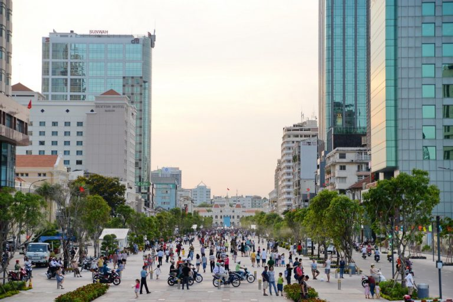
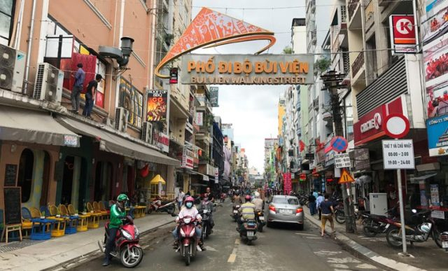
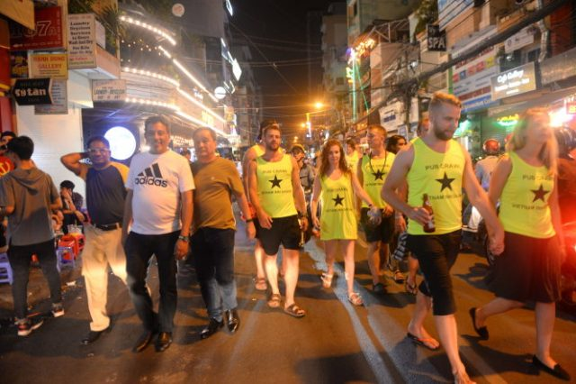
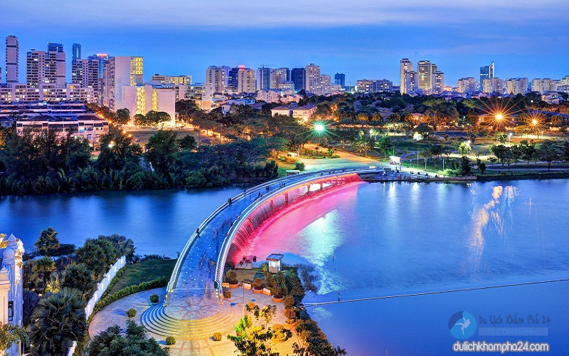
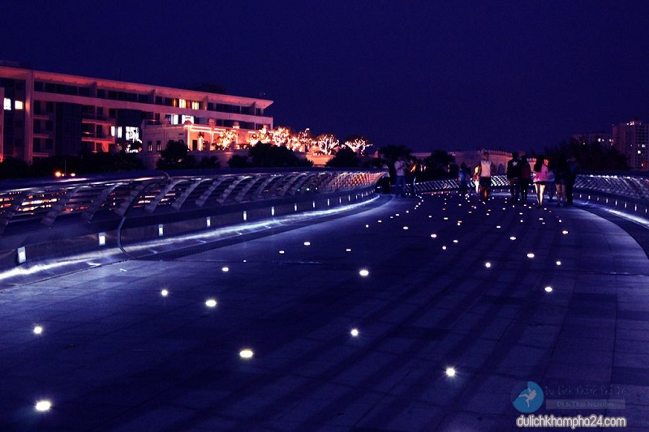

Những tuyến phố đi bộ "đình đám" tại TP.Hồ Chí Minh
Nếu được lựa chọn một đêm không ngủ ở Hà Nội phần lớn mọi người sẽ chọn phố Tạ Hiện, vậy còn ở Sài Gòn thì sao? Bạn đã từng nghe ai nhắc đến những đêm tưng bừng tại các con phố đi bộ sầm uất từ ngày đến đêm chưa? Muốn biết một Sài Gòn “suốt đêm không ngủ” ở phố đi bộ khác gì so với Tạ Hiên thì phải đích thân khám phá ngay.
1. Phố đi bộ Nguyễn Huệ
Phố đi bộ Nguyễn Huệ từ lâu đã trở thành một điểm đến không chỉ hấp dẫn khách du lịch mà còn với chính người dân địa phương tại Sài Gòn. Bên cạnh còn phố chính, xung quanh con phố này cũng có rất nhiều điều thú vị mà có thể các bạn chưa biết đến.
Là nơi thu hút rất nhiều người đến vui chơi
Phố đi bộ Nguyễn Huệ TPHCM địa điểm du lịch lý tưởng
Phố Nguyễn Huệ được nhiều người ví giống như một con phố ở nước ngoài nào đó, không dây điện, không rác, đường phố ngăn nắp với những làn kẻ dành riêng cho người đi bộ ở khắp nơi. Con đường dài được lát đá Granite sạch bóng cùng 2 đài phun nước, hệ thống cây xanh và hoa được bày trí sinh động. Vào buổi tối, ánh đèn ở đây cũng như ánh sáng từ các quán ăn, nhà hàng, quán cafe tỏa sáng lung linh tạo nên những khoảnh khắc đẹp. Vì thế, với những bạn nào đam mê chụp ảnh, thích có những bức ảnh thật lung linh thì chỉ cần ra đây là có đủ mọi bối cảnh cần thiết.
Kể từ ngày khánh thành đến nay, đây luôn luôn là một trong những điểm đến, vui chơi sầm uất nhất Sài Gòn bởi không gian thoáng đãng, nhiều hoạt động thú vị, hữu ích cũng như các khu chung cư đẹp, các cửa hàng, quán ăn, quán cafe nhộn nhịp.
Hình ảnh về đêm phố đi bộ Nguyễn Huệ Hồ Chí Minh
Địa chỉ: Đường Nguyễn Huệ, Quận 1, TP HCM
2. Phố đi bộ Bùi Viện
Khu phố Tây ăn chơi nức tiếng của các bạn trẻ Sài Thành được khoác lên mình “bộ áo mới” trở thành phố đi bộ thứ 2 của Sài Gòn sau phố đi bộ Nguyễn Huệ.
Đường Bùi Viện sẽ cấm xe một đoạn dài khoảng 500m, từ Đề Thám đến Đỗ Quang Đẩu trong thời gian từ 19 giờ tối – 2 giờ sáng hôm sau vào 2 ngày cuối tuần để phục vụ các hoạt động vui chơi giải trí với các gian hàng ẩm thực, các trò chơi dân gian, các màn trình diễn đường phố,… Du khách đến với phố đi bộ sẽ được hưởng “four free” (4 miễn phí): nhà vệ sinh; wifi; cung cấp thông tin, hỗ trợ du khách và “nụ cười miễn phí”.

Khung cảnh nhộn nhịp của phố đi bộ Bùi Viện
Phố Tây Bùi Viện sẽ cấm xe từ 19h tối đến 2h sáng thứ 7, chủ nhật hàng tuần
Phố Bùi Viện được biết đến là khu phố Tây ba lô do tập trung chủ yếu khách đến từ phương Tây
Địa chỉ: Phường Phạm Ngũ Lão, quận 1, thành phố Hồ Chí Minh
3. Cầu Ánh Sao
Nếu phố đi bộ Nguyễn Huệ, phố Bùi Viện là những điểm ăn chơi sôi động bậc nhất Sài Thành thì cầu Ánh Sao Sài Gòn cũng hấp dẫn không kém. Đây là cây cầu bộ hành đầu tiên của Việt Nam, chỉ dành cho người đi bộ để ngắm cảnh. Nó đã trở thành một trong những biểu tượng của thành phố cũng là điểm đến lý tưởng của người dân và du khách, đặc biệt là giới trẻ. Nếu bạn muốn có một buổi hẹn hò lãng mạn hay đơn giản là cần một không gian để tụ tập bạn bè hóng gió, tán gẫu thì đừng bỏ qua địa điểm này nhé!
Cầu Ánh Sao - Điểm đến lý tưởng ở Sài Gòn
Cầu Ánh Sao gây thu hút bởi hệ thống ánh sáng và phun nước
Đi dạo trên cầu Ánh Sao
Cầu Ánh Sao Sài Gòn được biết đến là cây cầu duy nhất ở Việt Nam không có phương tiện qua lại mà chỉ có người đi bộ. Cầu tọa lạc tại khu đô thị mới Phú Mỹ Hưng, quận 7, thành phố Hồ Chí Minh, bắc qua rạch Thầy Tiêu, nối liền khu hồ Bán Nguyệt với khu kênh đào. Nó được mệnh danh là Singapore thu nhỏ của Việt Nam, hình ảnh của cây cầu và khu phố hiện đại đã biến nó trở thành biểu tượng văn minh của thành phố.
Địa chỉ: Khu đô thị mới Phú Mỹ Hưng, quận 7, thành phố Hồ Chí Minh